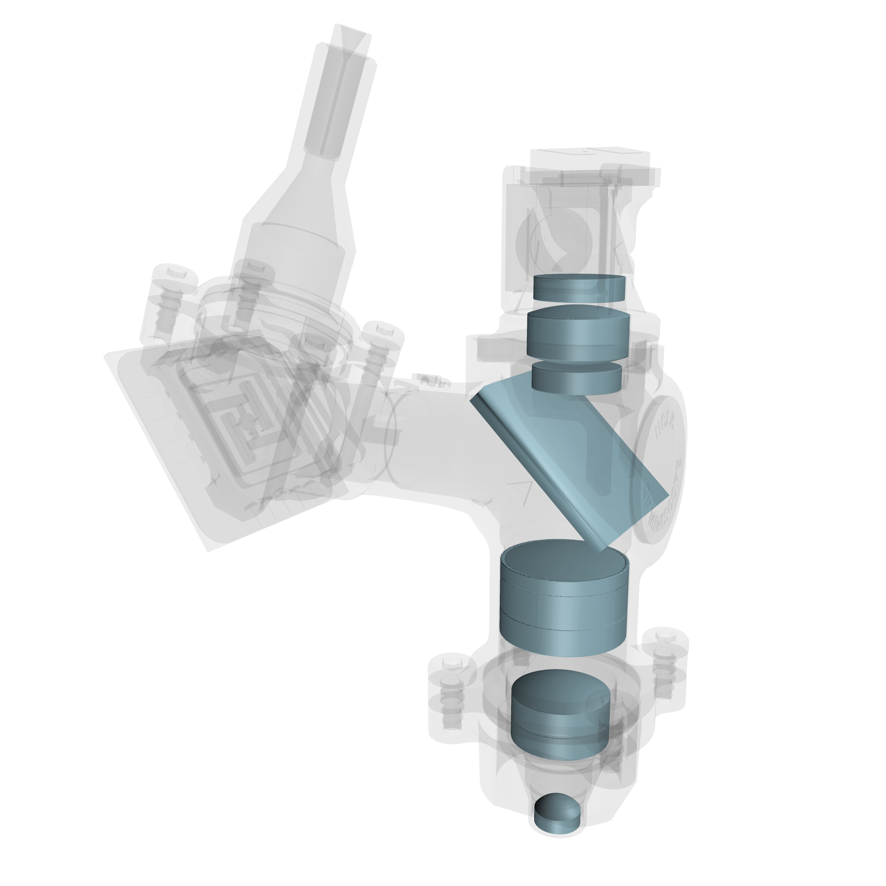
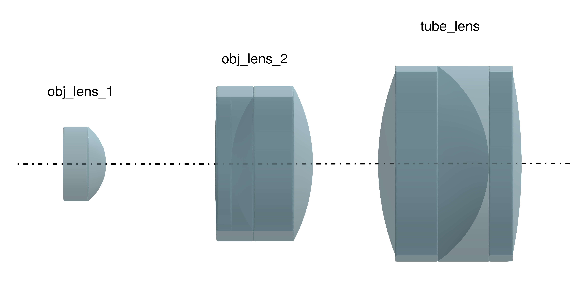
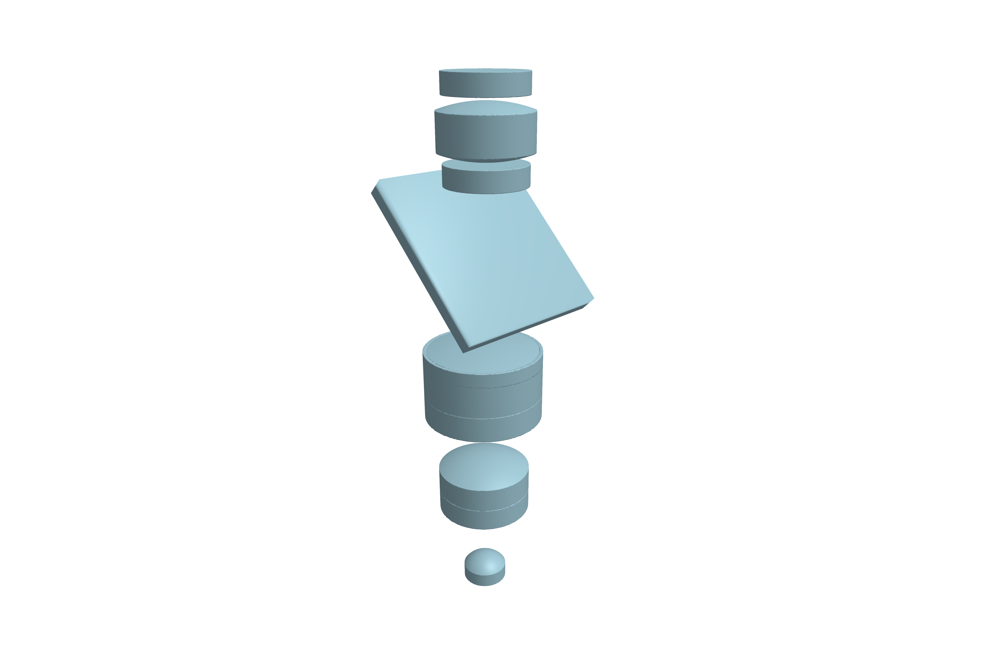
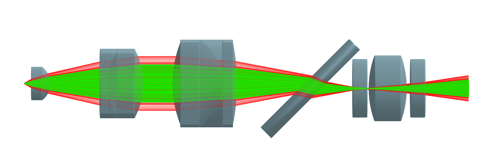

Miniature microscope
The UCLA Miniscope is a lightweight microscope that utilizes 2-photon fluorescence imaging to record neural activity in awake, freely moving mice [1]. This beginner tutorial aims to reproduce the optical path of the imaging system from the data provided in the UCLA 2P Miniscope repository. You will learn how to:
- Define optical components (e.g. a
SphericalDoubletLens) - Position the mentioned components using the kinematic API
- Define an optical
System - Add a source of
Rays - Trace a
Beamthrough the optical system - Visualize the results
All specifications for the optical system and CAD files are taken from the UCLA miniscope repository under GNU GPL-3.0.

How to follow this tutorial
All figures you will see below are pregenerated. The full code and all 3D assets are available in the following files:
┌ Info: Files located at:
└ path = "/home/runner/work/BeamletOptics.jl/BeamletOptics.jl/docs/build/assets/ms_assets"If you want to reproduce the plots in this tutorial by yourself, it is recommend that you use the render! function as described in the Visualization section. In addition, your simulation script to follow this tutorial should include the following setup code at the start of the file:
using GLMakie, BeamletOptics
const BMO = BeamletOptics
const cm = 1e-2
const mm = 1e-3Miniscope objective lenses
This tutorial will focus on modeling the return path of the fluorescence light. Based on the design files provided in the resources above, we will start by defining the first lens along the optical path. This plano-convex lens can be generated via three approaches:
- Design a
BeamletOptics.AbstractShapeand pass it into theLenstype - Use the
SphericalLensconvenience constructor - Utilize the quasi surface-based
Lensconstructor
Due to its versatility, we will use the latter method in order to reimplement the Zemax design file. It is based on the definition of surface types which will be translated into the correct AbstractShape automatically. Refer to the Surface based lens construction section for more information.
Defining refractive index data
Before we can start, we will need to define refractive indices as a function of the wavelength. For the purpose of this tutorial, we will need to consider the refractive index of the relevant glasses at the design wavelengths. Later on we will define geometrical beams with discrete wavelengths for the ray tracing solver. For the purpose of fluorescence imaging, we will look at $\lambda_{green} = 546.1~\mathrm{nm}$ and $\lambda_{red} = 656.3~\mathrm{nm}$. The indices have been manually taken from the Schott glass catalog.
# Define the design wavelengths
λ_green = 546.1e-9
λ_red = 656.3e-9
lambdas = [λ_green, λ_red]
# Define ref. indices at the specified wavelengths
NBK7 = DiscreteRefractiveIndex(lambdas, [1.51872, 1.51432])
NSK5 = DiscreteRefractiveIndex(lambdas, [1.59142, 1.58619])
NSF4 = DiscreteRefractiveIndex(lambdas, [1.76164, 1.74719])
NLAK22 = DiscreteRefractiveIndex(lambdas, [1.65391, 1.64760])
NLASF44 = DiscreteRefractiveIndex(lambdas, [1.80832, 1.79901])Note that the data for ($\lambda_{1}$, $\lambda_{2}$) is mapped onto ($n_{1}$, $n_{2}$). For more information, refer to the DiscreteRefractiveIndex docs.
Specifying the lens shape
The following code defines the front planar surface and the back spherical convex surface.
# Objective lens 1
surf_1 = CircularFlatSurface(2*1.144mm)
surf_2 = SphericalSurface(-1.448mm, 2*1.144mm)
obj_lens_1 = Lens(surf_1, surf_2, 1.3mm, NSK5)Note that obj_lens_1 is a single Lens entity once spawned and can be manipulated in 3D-space as described in the section: Moving optical elements.
Building the objective group
To build the second and third lens elements of the objective group we will proceed as above. However, these lenses are spherical doublets formed by two lenses bonded with an optical adhesive in practice. They are also more complex in shape, featuring a mechanical outer diameter. For the second lens the generating code is provided below. Two Lenses can be combined into a DoubletLens. Correct "assembly" of the lens parts is the responsibility of the user.
# Objective lens 2 - define surfaces
surf_1 = SphericalSurface(38.184mm, 2*1.840mm, 2*2.380mm)
surf_2 = SphericalSurface(3.467mm, 2*2.060mm, 2*2.380mm)
surf_3 = SphericalSurface(-5.020mm, 2*2.380mm)
# Define front and back lens
dl11 = Lens(surf_1, surf_2, 0.5mm, NSF4)
dl12 = Lens(surf_2, surf_3, 2.5mm, NLAK22)
# Move back lens into position
translate3d!(dl12, [0, thickness(dl11), 0])
# Spawn doublet
obj_lens_2 = DoubletLens(dl11, dl12)The lens parts dl11 and dl12 are joined together by moving dl12 along the y-axis by a distance equal to the on-axis thickness of dl11.
In general, most components provided by BMO are aligned with the global y-axis and spawned at the origin unless specified otherwise.
Similarily, the third objective lens can be reproduced from the available Zemax data as follows:
# Tube lens
surf_1 = SphericalSurface(7.744mm, 2*2.812mm, 2*3mm)
surf_2 = SphericalSurface(-3.642mm, 2*3mm)
surf_3 = SphericalSurface(-14.413mm, 2*2.812mm, 2*3mm)
dl21 = Lens(surf_1, surf_2, 3.4mm, NLAK22)
dl22 = Lens(surf_2, surf_3, 1.0mm, NSF4)
translate3d!(dl22, [0, thickness(dl21), 0])
tube_lens = DoubletLens(dl21, dl22)Assembling the objective group requires that the individual lens elements be translated into position along the optical axis. This is achieved in the code below by taking the current position of the elements and adding the on-axis thickness in addition to the element distancing taken from the specification.
translate_to3d!(obj_lens_2, [0, position(obj_lens_1)[2] + thickness(obj_lens_1) + 3.344mm, 0])
translate_to3d!(tube_lens, [0, position(obj_lens_2)[2] + thickness(obj_lens_2) + 2mm, 0])
obj_group = ObjectGroup([obj_lens_1, obj_lens_2, tube_lens])The ObjectGroup locks all elements in place with respect to their relative positions and allows for combined translations and rotations of the elements.
Visualizing the lenses
In order to visualize what we have done so far, we will use GLMakie to create a 3D plot of the BMO geometry representation. The following code will be used.
# define rgba for lens look
lens_color() = RGBf(0.678, 0.847, 0.902)
lens_color(alpha) = RGBAf(0.678, 0.847, 0.902, alpha)
# generate figure
fig = Figure()
ax = LScene(fig[1,1])
render!(ax, obj_lens_1, transparency=true, color=lens_color(0.5))
render!(ax, obj_lens_2, transparency=true, color=lens_color(0.5))
render!(ax, tube_lens, transparency=true, color=lens_color(0.5))The generated figure can be seen below. A dashdot line has been added to indicate the global y-axis and lens labels are shown for easier viewing.

The filter and collection group
The miniscope features a dichroic beamsplitter to seperate the emission path from the imaging optics. For the imaging path, the beamsplitter is followed by two filters and a collection lens. For the purpose of this tutorial, we will model the beamsplitter and filters as simple glass plates, i.e. Prisms. However, for an accurate representation, we will first have to move the lens group into position. This involves a rotation around the x-axis by 90°. We can achieve this simply with the following command. Note that the pivot point lies at the origin.
xrotate3d!(obj_group, deg2rad(90))Modeling the dichroic filter
Spawning the "filter" works as detailled above. Using a Prism to represent the dispersive properties of the substrate glass is functionally equal to using a Lens and serves simply to indicate that this element is not for imaging purposes. Use the following snippet to create the element. Note that the element is moved to its global absolute position. This data is taken from the CAD model provided in the repository.
## Dichroic "splitter" - glass plate
shape = BMO.CuboidMesh(8mm, 1mm, 8.5mm)
translate3d!(shape, [-4mm, 0.0mm, -4.25mm])
BMO.set_new_origin3d!(shape)
splitter = Prism(shape, NBK7)
# Move to global position from origin
translate3d!(splitter, [0, 0, 18.677mm])
xrotate3d!(splitter, deg2rad(45))Modeling the collection group
For the collection group filters we use the same approach as above. The collection lens parameters are derived from the Zemax file and the parametrization works analogously as in the section: Building the objective group
ef_1 = Prism(BMO.PlanoSurfaceSDF(1mm, 4mm), NBK7)
ef_2 = Prism(BMO.PlanoSurfaceSDF(1mm, 4mm), NBK7)
collect_lens = Lens(
SphericalSurface(6.580mm, 4.5mm),
SphericalSurface(-6.580mm, 4.5mm),
2.6mm,
NLASF44
)
translate3d!(collect_lens, [0, position(ef_1)[2] + thickness(ef_1) + 0.1mm, 0])
translate3d!(ef_2, [0, position(collect_lens)[2] + thickness(collect_lens) + 0.25mm, 0])
collect_group = ObjectGroup([ef_1, collect_lens, ef_2])
# Move to global position from origin
xrotate3d!(collect_group, deg2rad(90))
translate3d!(collect_group, [0, 0.332mm, 21.937mm])Finally, we can define a System that stores all optical elements for the following ray tracing procedure.
system = System([obj_group, filter, collect_group])Elements can still be moved mutably while being inside the system and their final position is considered when running the solve_system! command. Visualizing the system can be easily achieved via render!(ax, system; # kwargs go here). The full optical system is shown below.

Geometrical ray tracing of the miniscope
Finally we are ready to perform the ray tracing step. This requires us to have a defined system and one or more beams for the solve_system!(system, beam) function. For more information on this topic, refer to the section: Tracing systems.
This package provides the convenience PointSource which will allows us to model a spread fan of light rays easily. We will define two monochromatic sources for the wavelengths specified above:
ps_green = PointSource([0, 0, -0.5mm], [0, 0, 1], deg2rad(20), λ_green, num_rays=1000, num_rings=5)
ps_red = PointSource([0, 0, -0.5mm], [0, 0, 1], deg2rad(30), λ_red, num_rays=1000, num_rings=5)The sources for $\lambda_{546.1~\mathrm{nm}}$ and $\lambda_{656.3~\mathrm{nm}}$ are initialized 0.5mm below the first optical surface of the imaging system with half-spread-angles of 20° and 30°, respectively. It is important to note that this value was chosen in order to roughly match the illustrated optical path in the miniscope publication [1, Fig. 1]. Feel free to play around the initialization values and observe how they influence the result of the optical path. Further, each source is initialized with a total of 1000 rays layered in 5 rings, where the first "ring" is a single beam along the optical axis.
In order to calculate the optical path, simply run the following command:
solve_system!(system, ps_green)
solve_system!(system, ps_red)The results can be visualized with the following script:
fig = Figure()
ax = LScene(fig[1,1])
render!(ax, system)
render!(ax, ps_green; color=RGBAf(0,1,0,1.00), render_every=5, flen=3mm, show_pos=false)
render!(ax, ps_red; color=RGBAf(1,0,0,0.25), render_every=5, flen=3mm, show_pos=false)For the plotting of the PointSource we will use the render_every keyword argument in order to only display every fifth beam. The flen keyword limits the length of the final, non-intersecting ray to 3mm after its last interaction. Below, the resulting figure is displayed (rotated by 90°):
